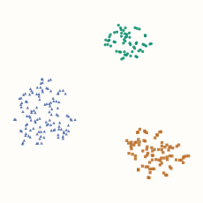
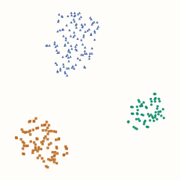
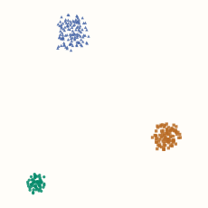
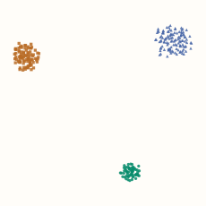

t-SNE
t-SNE builds a map whose nearby points try to reflect neighborhood relationships in the input data. It is especially useful for exploring feature vectors that have too many coordinates to plot directly. The map’s two axes are learned coordinates, without the feature-loading interpretation of PCA.
The method has two stages: turn input distances into neighborhood probabilities, then move the plotted points to match those probabilities. We will make both stages visible before looking at larger embeddings.
Turn distances into a neighbor preference
Start with four inputs: A = 0, B = 1, C = 4, and D = 5. From A, B is the closest candidate. Assign candidates a weight that decreases with distance, then divide by the sum of the weights. This produces a probability distribution over the other three points.
Click an anchor and change its bandwidth $\sigma$. A small bandwidth concentrates the weight on its closest neighbor; a larger bandwidth spreads it more evenly. This control changes one conditional distribution, not the later embedding.
The equation behind the bars
Write $x_i$ for the anchor, $x_j$ for a candidate, and $\|x_i-x_j\|^2$ for squared Euclidean distance. The Gaussian weight is an exponential of negative squared distance, divided by twice the bandwidth squared. Normalizing over candidates gives
The notation $j\mid i$ means “candidate j, given anchor i.” Each anchor can have its own bandwidth; the diagonal probability $p_{i\mid i}$ is zero.
Perplexity chooses an effective neighborhood size
t-SNE normally chooses the bandwidth separately for each point. You supply a target perplexity, an effective number of neighbors. A uniform choice among three candidates has perplexity 3; a distribution concentrated on one candidate approaches 1. Intermediate values describe uneven probabilities across several candidates.
A search adjusts each bandwidth to reach the target, where attainable. Thus perplexity 2 does not mean “keep exactly two edges” or “use the same radius everywhere.” Duplicate points and tied distances can limit which targets are attainable.
Optional: calculate that effective count
With natural logarithms, the row entropy is $H_i=-\sum_{j\ne i}p_{j\mid i}\log p_{j\mid i}$, and perplexity is $\exp(H_i)$. A uniform distribution over $m$ candidates has entropy $\log m$, so exponentiating returns $m$. For our four points, the maximum is 3.
Give each pair one symmetric target
A’s probability for B need not equal B’s probability for A: their surrounding candidates and fitted bandwidths can differ. t-SNE combines the two directions into one symmetric pair probability:
Here $N$ is the number of observations. All conditional rows together sum to $N$; adding their transposed copy doubles that sum. Dividing by $2N$ makes the matrix $P$ sum to one over ordered pairs: both (i, j) and (j, i) appear.
For the rest of our worked example, fit every bandwidth to perplexity 2. The bandwidths are approximately [2.236, 1.706, 1.706, 2.236]. The two directed A–B probabilities are about 0.7613 and 0.7526, giving $p_{AB}\approx0.1892$. Keep these input probabilities fixed while optimizing the map.
Let the layout propose another set of probabilities
Now give each observation a plotted position $y_i$ in two dimensions. The plot’s pair weight is $1/(1+\|y_i-y_j\|^2)$. Nearby plotted points get larger weights. Normalize across every ordered off-diagonal pair to obtain the map distribution $Q$:
This Student-t weighting decays more slowly than a Gaussian. Moderately related points can sit farther apart in the map without their weight becoming negligible. That helps when a two-dimensional layout cannot fit all the neighborhood geometry of a higher-dimensional space—the crowding problem. It does not make the map preserve every distance.
Move points to reduce the mismatch
The input supplies $P$; the current layout supplies $Q$. Compare them using KL divergence, with natural logarithms:
If an important input pair has a large $p_{ij}$ but a much smaller $q_{ij}$, it contributes a strong mismatch. Because all $q$ values share a normalization, moving one point affects the whole distribution. Individual terms can be negative; the full KL divergence is nonnegative.
The layout below starts with A and B on opposite corners even though they are close in the input. Its initial $q_{AB}$ is only about 0.0543, compared with the fixed target 0.1892. Play the actual gradient steps or inspect them with the slider:
Optional: the gradient used by the animation
Differentiate the full loss with respect to one plotted position. For symmetric, normalized $P$ and the $Q$ above, the result is
Gradient descent subtracts a small multiple of this vector. In a pair’s contribution, $p_{ij}>q_{ij}$ pulls the points together; $p_{ij}<q_{ij}$ pushes them apart. Each point’s full move sums contributions from all other points, so a particular pair need not get closer on every step.
Python: fit the four-point probabilities and reproduce all 80 steps
import numpy as np
from scipy.optimize import brentq
x = np.array([0, 1, 4, 5.])
distance2 = (x[:, None] - x[None, :]) ** 2
conditional = np.zeros((4, 4))
for i in range(4):
others = np.arange(4) != i
d = distance2[i, others]
def row(beta):
# beta = 1 / (2*sigma^2). Subtracting a constant avoids underflow.
weights = np.exp(-beta * (d - d.min()))
p = weights / weights.sum()
positive = p > 0
entropy = -np.sum(p[positive] * np.log(p[positive]))
return p, entropy
# These bounds bracket perplexity 2 for this particular four-point dataset.
beta = brentq(lambda b: row(b)[1] - np.log(2), 1e-9, 100)
conditional[i, others] = row(beta)[0]
P = (conditional + conditional.T) / (2 * len(x))
def evaluate(Y):
delta = Y[:, None, :] - Y[None, :, :]
numerator = 1 / (1 + np.sum(delta**2, axis=2))
np.fill_diagonal(numerator, 0)
Q = numerator / numerator.sum()
positive = P > 0
loss = np.sum(P[positive] * np.log(P[positive] / Q[positive]))
gradient = 4 * np.sum(((P - Q) * numerator)[:, :, None] * delta, axis=1)
return loss, gradient, Q
Y = np.array([[-1, -1], [1, 1], [1, -1], [-1, 1.]], dtype=float)
print(evaluate(Y)[0]) # About 0.675410.
for _ in range(80):
loss, gradient, Q = evaluate(Y)
Y -= gradient # Learning rate 1, chosen for this small demonstration.
Y -= Y.mean(axis=0) # Remove a translation; pair distances are unchanged.
print(evaluate(Y)[0]) # About 0.002095.
Read the plot as a neighborhood view
Here are four real t-SNE fits of the same 270 synthetic observations with eight features. The source groups contain 60, 90 and 120 points, with input standard deviations 0.3, 0.8 and 1.3. Every feature uses comparable units in this constructed example. The groups are colored after fitting; their labels do not enter t-SNE.




Check whether the same local relationships remain visible across settings. A gap between islands is not a calibrated distance between populations, and an island’s area is not an estimate of its original density. A visible subdivision may reflect the chosen neighborhood scale; verify it in the original representation before naming a new cluster.
For repeated fits with the same input probabilities, the final KL losses compare how well the layouts match that target. Changing perplexity changes $P$, so a lower loss at another perplexity is not a universal score for a better visualization.
Python: reproduce the four comparison embeddings
import numpy as np
from sklearn.datasets import make_blobs
from sklearn.manifold import TSNE
centers = np.zeros((3, 8))
centers[:, :2] = [[-6, 0], [0, 6], [6, 0]]
X, source_group = make_blobs(
n_samples=[60, 90, 120], centers=centers,
cluster_std=[0.3, 0.8, 1.3], random_state=17,
)
# All eight synthetic features use comparable units here.
embeddings = {}
for perplexity in [8, 40]:
for seed in [0, 7]:
embeddings[perplexity, seed] = TSNE(
n_components=2, perplexity=perplexity,
init="random", learning_rate="auto", max_iter=1000,
random_state=seed, n_jobs=1,
).fit_transform(X) # source_group is used only to color the plots.
These figures were generated with scikit-learn 1.9.1. Fixing a seed makes a setup reproducible; it does not establish that its neighborhoods are faithful or that the pattern is scientifically meaningful.
Make the input geometry and fitting choices explicit
- Choose a meaningful representation and distance. Large numerical feature scales can dominate Euclidean distances. Use appropriate preprocessing for the data; for very high-dimensional inputs, preliminary PCA or a suitable sparse reduction can help. Retain enough structure for the question being explored.
- Inspect several neighborhood scales and initializations. Keep perplexity below the sample count in scikit-learn. Record preprocessing, metric, initialization and seed. A stable result is stronger evidence than a single attractive layout.
- Separate optimization settings from interpretation. Early exaggeration temporarily increases attractive input weights; the learning rate controls movement. The exact all-pairs implementation has quadratic storage and computation per gradient step. Practical implementations use approximations and additional optimization machinery.
A fitted map is not automatically a transformation
Ordinary t-SNE learns coordinates for the observations included in that fit. Scikit-learn’s TSNE exposes fit_transform, without a general transform method for new rows. Refitting after appending data can move existing points and create a different coordinate system.
A joint map of all available unlabeled observations can be appropriate for exploration. It should not be presented as a learned transformation evaluated on untouched data. If a downstream model needs stable coordinates for new inputs, choose a method or explicit extension that supports that workflow; the UMAP chapter discusses its fitted transformation.
Optional implementation: evaluate the exact map objective
The Python example fits the input probabilities. This C++ companion takes a normalized symmetric $P$ and two-dimensional positions, then returns the same KL loss and gradient used above. It is an all-pairs teaching implementation; it does not implement a scalable neighbor search or optimizer.
C++17: normalized map probabilities, loss and gradient
#include <array>
#include <cmath>
#include <stdexcept>
#include <vector>
using Point = std::array<double, 2>;
using Matrix = std::vector<std::vector<double>>;
struct TSNEResult { double loss; std::vector<Point> gradient; };
TSNEResult evaluate(const Matrix& P, const std::vector<Point>& Y) {
const std::size_t n = Y.size();
if (n < 2 || P.size() != n)
throw std::invalid_argument("matching P and Y with at least two points required");
for (const auto& row : P) if (row.size() != n)
throw std::invalid_argument("square P required");
for (const auto& point : Y) for (double v : point)
if (!std::isfinite(v)) throw std::invalid_argument("finite coordinates required");
double mass = 0;
for (std::size_t i = 0; i < n; ++i)
for (std::size_t j = 0; j < n; ++j) {
if (!std::isfinite(P[i][j]) || P[i][j] < 0 ||
(i == j && P[i][j] != 0) || std::abs(P[i][j]-P[j][i]) > 1e-12)
throw std::invalid_argument("nonnegative symmetric P with zero diagonal required");
mass += P[i][j];
}
if (std::abs(mass-1) > 1e-9)
throw std::invalid_argument("P must sum to one over ordered pairs");
Matrix weight(n, std::vector<double>(n, 0));
double normalizer = 0;
for (std::size_t i = 0; i < n; ++i)
for (std::size_t j = 0; j < n; ++j) if (i != j) {
double dx = Y[i][0]-Y[j][0], dy = Y[i][1]-Y[j][1];
double distance2 = dx*dx + dy*dy;
if (!std::isfinite(distance2)) throw std::overflow_error("distance overflow");
weight[i][j] = 1 / (1 + distance2);
normalizer += weight[i][j];
}
TSNEResult result{0, std::vector<Point>(n, {0, 0})};
for (std::size_t i = 0; i < n; ++i)
for (std::size_t j = 0; j < n; ++j) if (i != j) {
double q = weight[i][j] / normalizer;
if (P[i][j] > 0)
result.loss += P[i][j] * (std::log(P[i][j]) - std::log(q));
double factor = 4 * (P[i][j]-q) * weight[i][j];
for (int k = 0; k < 2; ++k)
result.gradient[i][k] += factor * (Y[i][k]-Y[j][k]);
}
return result;
}
Use the $P$ and starting positions from the Python example. Each update subtracts the returned gradient from the positions for learning rate 1. The factor 4 assumes the ordered-pair normalization used throughout this chapter.
References and further reading
- Van der Maaten and Hinton (2008): Visualizing Data using t-SNE — the neighbor probabilities, crowding problem, heavy-tailed map and gradient.
- Van der Maaten: t-SNE FAQ — perplexity, repeated fits and comparing losses for a fixed input target.
- Scikit-learn: TSNE — current parameters, initialization and exact versus approximate implementations.